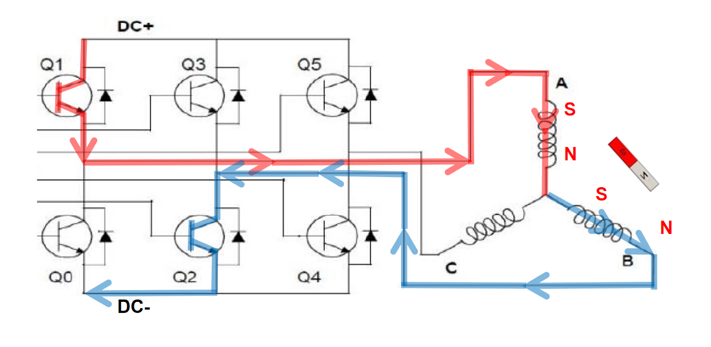
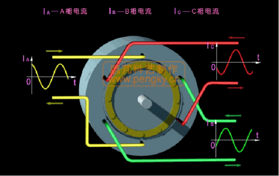
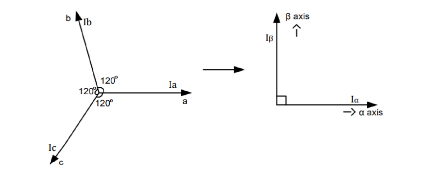
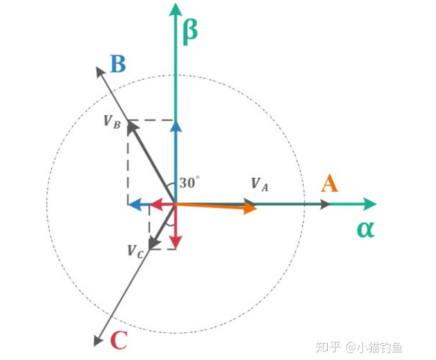
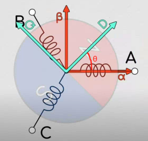
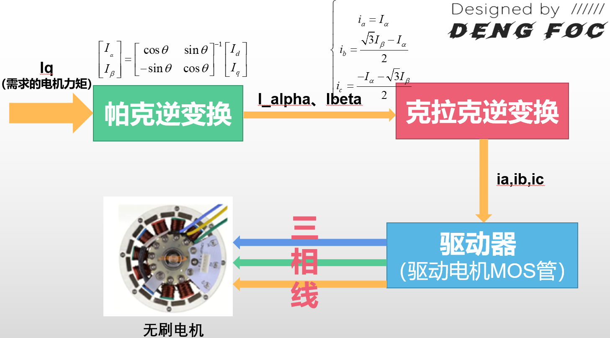

FOC 算法——无刷电机原理与控制
目录
- 为什么需要学习理论
- 无刷电机
- FOC 算法原理
- CLARKE 变换
- PARK 变换
- 开环 FOC
- 闭环 FOC
- 封装 FOC 库
为什么需要学习理论
SimpleFOC 的很多不足和短板，这些短板主要分为以下几个方面：
- SimpleFOC 库架构复杂，内存占用大
- SimpleFOC 库只注重 FOC 功能，没有做很多的软硬件扩展支持，比如Can，双编码器，ROS，无线，OpenMV，Python库，树莓派等，这限制了其在应用领域的进一步发展
- SimpleFOC 库没有很好的电机快速应用功能，想要在这个库上运行电机，必须经过复杂的调参，所以，我认为引入自动PID调参在我的库里实际上很有必要
- SImpleFOC 库没有无感电机驱动的相关算法，限制了其在无感工况条件下的应用
理想中 FOC 库会具有以下优势功能：
- 资源占用低：内存占用比 SimpleFOC 少2/3
- 开放度更广：库把基本的FOC算法接口（如电角度、IαIα 、IβIβ）等以一种及其简单的方式向用户开放，使得用户可以直接接触到 FOC 算法实现的全过程，易于学习和在此基础上更进一步的开发 FOC 算法
- 外接能力强：支持与 OpenMV、树莓派、Python 等多种硬件方案和软件语言直接的对接和互相调用，可以以比 SimpleFOC 更快的方式完成无刷电机应用的开发
- 即插即用，无需校准：先进的参数自识别功能可以使得用户无需配置任何参数，直接插入电机和编码器即可跑FOC
- 无线控制支持：高速 UDP，ESPNow 通讯，无需信号线即可控制电机 脚本支持：库内建强大的脚本语言 Lua，可以在不编译的情况下快速建立FOC应用
- 强大的工具链支持：支持与 Matlab Simulink 、ROS 等系统直接通讯，秒速建立机器人应用
- 高精度减速器应用支持：支持双编码器减速机应用
参考 FOC
本 FOC 库将与 DengFOC 硬件联合组成一整套完整可用的 FOC 电机驱动方案。资料链接：
1 灯哥开源 淘宝店–一站配齐DengFOC板 您的支持就是我们持续做开源内容和课程的动力，项目收益将用于后续开发DengFOC和做课程~
4 DengFOC官网 包含课程文字版讲义，DengFOC使用文档，库使用方法等。
无刷电机
无刷电机结构分类
首先，在学会怎么控制无刷电机前，我们需要对无刷电机的结构有基本的认识，基本的航模无刷电机结构图如下图所示，分为前盖，中盖，后盖，磁铁，硅钢片，漆包线、轴承和转轴组成。

更加宏观上分，我们也可以直接把电机分为定子部分和转子部分。
- 定子就是有线圈绕组，固定不动的部分；
- 转子就是电机旋转的部分，用于输出电机的转动和扭矩。
而进一步的，无刷电机可以分为内转子和外转子两种。
- 内转子无刷电机就是转子在内部；
- 外转子无刷电机就是转子在外面，我们常见的无刷电机。比如航模无刷电机，就是外转子无刷电机。
直流无刷电机驱动原理
直流无刷电机依靠改变电机定子线圈的电流交变频率和波形，在定子周围形成磁场，驱动转子永磁体转动，从而带动电机旋转。所以，研究改变定子线圈电流交变频率和波形是驱动电机的关键。
硬件控制原理
无刷电机与有刷电机的区别在于无刷电机没有电刷，不能像有刷电机那样通过机械结构进行电流换向，而是要通过 MOS 等器件实现电子换向。MOS 可看作是控制电流通断的开关，类似水龙头控制水流。
通过控制不同 MOS 管的通断组合，可改变电机线圈电流大小和方向。
例如，打开 Q1 管和 Q2 管，电流从 A 相流到 B 相再到负极，根据右手螺旋定则产生磁场，定子线圈吸引转子磁铁转动，但转子旋转一定角度后会停止。此时打开 Q1 管和 Q4 管，磁场方向改变，转子磁极进一步旋转。交替开关不同 MOS 管，可实现电机磁极交替运动，这就是无刷电机旋转运动原理。因此，电机控制实际上是对 MOS 管开关规律的控制，而这需要单片机程序控制，由此引出 FOC 控制算法，它是对电机运动模型抽象简化，进而有规律控制 MOS 管开关通断的过程。

因此，我们就可以总结出一条规律：对电机的控制实际上就是对MOS管开关规律的控制。而MOS管的开关规律是需要用到单片机程序进行控制的，因此这就引出了我们的 FOC 控制算法，FOC 控制就是一种对电机运动模型进行抽象化和简化，进而有规律控制各个MOS管开关和通断的过程。
FOC 算法原理、数学模型
根据期望的电机运行情况，通过一个电机运行模型，实现交替开关各个 MOS 管的算法，这就是 FOC 算法，它的另一个名称就是磁场定向控制算法，而 CLARKE 变换和 PARK 变换，就是磁场定向控制算法的两个核心。
CLARKE 变换
交替开关 MOS 管使电机转动，这些 MOS 管快速周期性开关，观察各相可得到 A、B、C 三相电流随时间变化的曲线，它们相位差为 120°。从另一个角度看，控制这个相位差为 120° 的正弦状波形就能实现电机控制。

CLARKE 变换里的克拉克是一个真实存在的人 ，她的全名叫：伊迪丝·克拉克（Edith Clarke，1883 年 2 月 10 日 - 1959 年 10 月 29 日）。她是美国第一位专业从事电气工程师工作的女性， 也是美国第一位电气工程女教授。 她是第一位在美国电气工程师学会发表论文的女性，第一位专业地位得到 Tau Beta Pi 认可的女性工程师，也是第一位被任命为美国电气工程师学会院士的女性。 她专门从事电力系统分析，并撰写了交流电力系统的电路分析。
所谓CLARKE 变换，实际上就是降维解耦的过程，把难以辨明和控制的三相相位差120°电机波形降维为两维矢量。
控制 120° 的正弦状波形实现电机控制有难度，因为相之间相互耦合，改变一相无法实现控制，必须三相同时改变，问题复杂。CLARKE 变换就是降维解耦过程，把三相相位差 120° 的电机波形降维为两维矢量。其思路是先将三相电流波形抽象化为三个间隔 120° 的矢量，再利用三角函数将矢量降维到两个坐标轴，将复杂三相问题转化为 \(α - β\) 坐标轴上的数值变化问题。

CLARKE 变换推导
投影
显然，针对 \(α-β\) 坐标系中 \(α\) 轴，有：
\(\(\begin{aligned}&\mathrm{I_\alpha=i_a-sin30^\circ i_b-cos60^\circ i_c}\\&\mathrm{I_\alpha=i_a-\frac{1}{2}i_b-\frac{1}{2}i_c}\end{aligned}\)\)
针对 \(α-β\) 坐标系中 \(β\) 轴，有
\(\(\begin{aligned}&\mathrm{I_{\beta}}=\cos30^{\circ}\mathrm{i_{b}}-\cos30^{\circ}\mathrm{i_{c}}\\&\mathrm{I_{\beta}}=\frac{\sqrt{3}}{2}\mathrm{i_{b}}-\frac{\sqrt{3}}{2}\mathrm{i_{c}}\end{aligned}\)\)
把上面的投影结果列成矩阵形式，有：

等幅值
由于 \(b,c\) 相电流投影的存在，导致在 \(a\) 相输入 1A 电流，反应在 \(α\) 轴上的电流并不是等赋值的 1A。
为使得，重合的矢量 \(a\) 与 \(α\) 电流相等，让式子等辐值，乘以 \(\cfrac 2 3\):
\(\([\begin{array}{l}\mathrm{I}_\alpha\\\mathrm{I}_\beta\end{array}]=\frac{2}{3}[\begin{array}{lllll}1&&-\frac{1}{2}&&-\frac{1}{2}\\0&&\frac{\sqrt{3}}{2}&&-\frac{\sqrt{3}}{2}\end{array}]\begin{bmatrix}\mathrm{i}_\mathrm{a}\\\mathrm{i}_\mathrm{b}\\\mathrm{i}_\mathrm{c}\end{bmatrix}\)\)
移项：
根据基尔霍夫电流定律：
接下来求 \(\(\mathrm{I}_{\beta}\)\)：
根据基尔霍夫电流定律：
\(\(\begin{aligned}&\mathrm{i_{a}+i_{b}+i_{c}=0}\\&\mathrm{-}\mathrm{i_{c}=-(i_{a}+i_{b})}\\&\mathrm{Ip}=\frac{1}{\sqrt{3}}\times(\mathrm{i_b-i_c})\\&=\frac{1}{\sqrt{3}}\times(\mathrm{i_b+i_a+i_c})\\&=\frac{1}{\sqrt{3}}\times(2\mathrm{i_b+i_a})\end{aligned}\)\)
So,
可以看出，在式子中，我们消去了变量 \(i_c\)，这是因为由于基尔霍夫电流定律的存在，我们并不需要知道所有三相电流，我们只需要知道两相电流就能够求解得到另外一相的电流，反映在硬件上，我们就可以省去一路的电流传感器！节省了成本！
CLARKE 逆变换推导
那么，有没有什么办法能够反过来把降维后的形式重新升维变回原来的 \(i_a,i_b,i_c\) 三相电流波形呢？有，这就被称为克拉克逆变换。这个在后续的 FOC 算法中也会很常用到。
已知：
研究逆变换 \(i_b\)：
根据基尔霍夫电流定律，\(i_a+i_b+i_c=0\)，我们得到逆变换 \(i_c\)：
So,
PARK 变换
PARK 变换 就是能够帮助我们求得各种旋转情况下的 \(I_α\) 和 \(I_β\)。
我们发现降维后尽管少了一个变量，但是只要电机转动，\(I_α\) 和 \(I_β\) 就依然在一直变化，能不能对这个电机系统进行进一步的降维，使得我们甚至不用考虑变化的 \(I_α,I_β\)，只需要有一个定值就能够描述整个电机系统的转动状态？
帕克在我们刚刚固定在电机定子上的 \(I_α−I_β\) 坐标系上，另外新建了一个坐标系，我们称之为 \(I_q−I_d\) 坐标系，这个坐标系是可以随电机转子转动的！它与电机转子固联！

那么我们就有了两个坐标系了，一个是固定在定子上的坐标系 \(I_α−I_β\)，一个是固定在转子上的坐标系 \(I_q−I_d\)。进一步的，我们把两个坐标系画在一起，我们就有如下图所示的坐标：

其中，\(I_q−I_d\) 坐标系随转子转动，D 轴在此处设定为指向电机的 N 级，\(I_q−I_d\) 坐标系因转动而造成的与 \(I_α−I_β\) 坐标系的差角 \(θ\)，就被称为电角度！
那么，很轻松的，还是利用简单的三角函数构建的旋转矩阵，在知道电角度的前提下，我们很容易就能够把 \(i_q−i_d\) 坐标系上的值映射（旋转）到 \(i_α−i_β\) 坐标系上！式子如下：
因此，在知道电角度的前提下，我们就可以用 \(i_q,i_d\) 坐标系上的定值来描述电机的旋转！这正是我们一直渴望的电机旋转数学模型！
PARK 逆变换
根据矩阵乘法，取逆，我们可进行帕克逆变换，也就是知道 \(i_q,i_d\) 值和电角度的前提下，反求 \(i_α,i_β\) ，式子如下：
写成等式结果：
在实际的 FOC 应用中，电角度是实时有编码器求出的，因此是已知的。\(I_q\) 和 \(I_d\) 可以合成一个矢量，加上电角度（旋转）的存在，因此可以看成一个旋转的矢量。在通过 \(I_q,I_d\) 和电角度求得 \(I_α\) 和 \(I_β\) 后，我们就可以通过前面提到的克拉克逆变换求得 \(i_a,i_b,i_c\) 的波形，这正是 FOC 的基本过程！
通常在简单的 FOC 应用中，我们只需要控制 \(I_q\) 的电流大小，而把 \(I_d\) 设置为 0。此时，\(I_q\) 的大小间接就决定了定子三相电流的大小，进而决定了定子产生磁场的强度。进一步我们可以说，它决定了电机产生的力矩大小！
而 \(I_q\) 是旋转的矢量；在前面说了，同时 \(I_q\) 又会间接影响磁场的强度，这正是 FOC 的名称磁场定向控制的由来。
FOC 算法
所谓 FOC 的过程，其实就是输入需求的电机力矩，最后得到对应的真实世界电机输出力矩的过程，如上图所示。而其中最核心的数学过程，就是帕克逆变换和克拉克逆变换，而这两个变换的数学公式上图中框图上面的公式所示，其中 PARK 变换可以对用户输入的 \(I_q\) 进行变换，根据电角度算出 \(I_α\) 和 \(I_β\)，接着，通过克拉克逆变换，三相电流 \(i_a,i_b,i_c\) 能够被求出，最后这三个 \(i_a,i_b,i_c\) 能够用作控制指令输入到电机控制器硬件中进行电机的控制。

FOC 代码实现
包括 FOC 开环速度、FOC 闭环位置、FOC 闭环速度和 FOC 电流闭环等方面，但文中未详细展开介绍这些内容的实现细节。